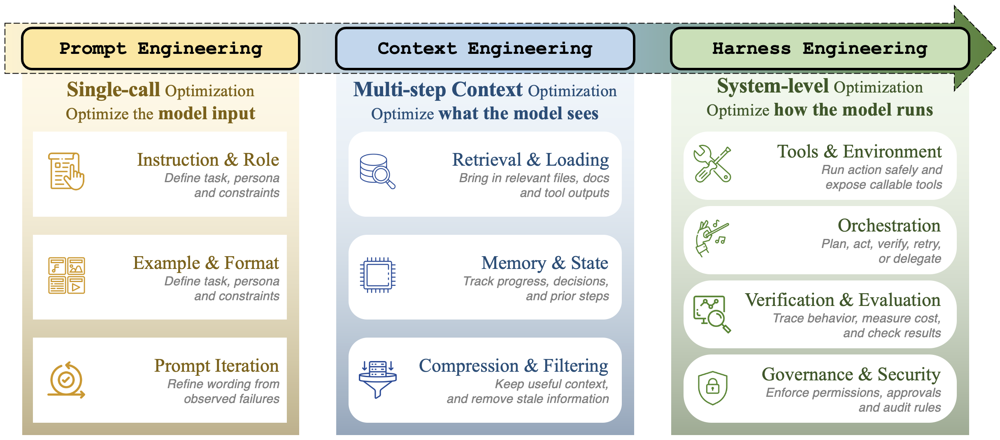
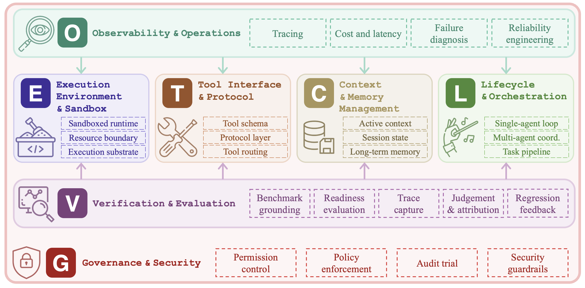
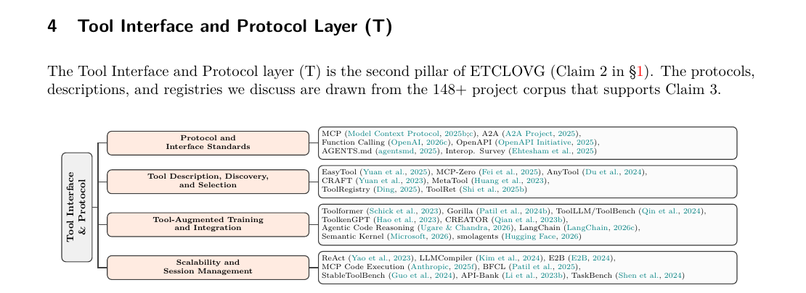
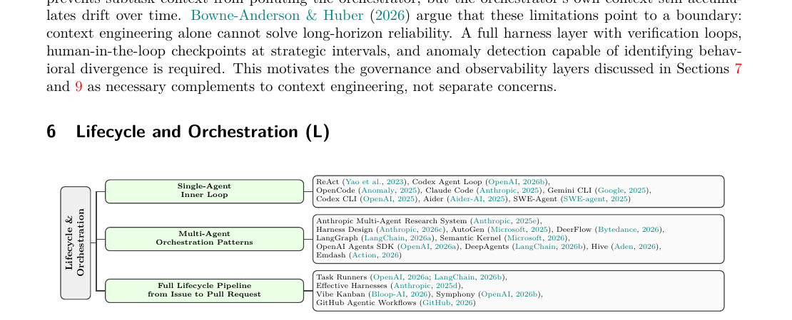
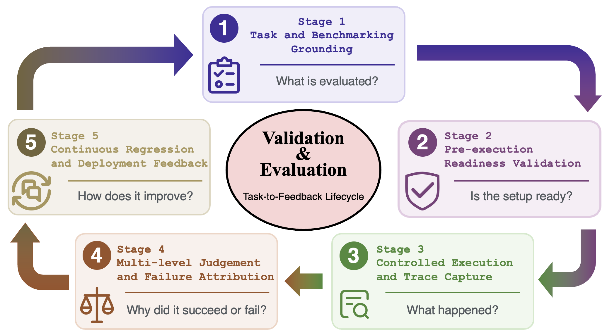

综述 · 智能体工程
Agent harness
工程
在真实部署中，决定 LLM 智能体可靠性的不是模型本身，而是其外围的 harness。七个层次、170+ 开源项目、一套分类法 —— 终于，为实践者早已熟知却无以名之的事物，赋予了语言。
这份综述提出：包裹 LLM 的基础设施层，已经成为决定智能体可靠性的主导变量。它综合了来自 OpenAI、Anthropic、LangChain 等实践者的经验与学术研究，将 170+ 开源项目映射至一套新分类法。封面定下基调 —— 论文式，而非幻灯片式。
插曲 · 一个词的渊源
为什么叫 harness？
原意为马具 —— 套在牲畜身上、用以控制并驱使的束带。在 agentic 时代，harness 演化为包裹 LLM 的全套脚手架：沙箱、工具、记忆、编排、可观测、验证、治理。
从控制马匹，到控制 LLM —— 同一个词，同一个意图。
harness 在英文里原指马具 —— 套在马匹身上、由人借以控制方向与力道的束带。在 agentic AI 时代，这个词被借用来指代包裹 LLM 的整套外围设施。同样是『一个能动者 + 一套控制装置』的结构。
论点 · 01
仅靠更好的模型，
无法带来更可靠的智能体。
2026 年初的三项独立实证结果。变量保持不变的是模型；改变的，是其外围的 harness。
-
01
仅修改编辑工具，性能提升达 10×
Boluk 2026 —— 仅一项 harness 层面的改动；模型从未更换。远超模型升级通常带来的 2–4 分提升。
-
02
仅靠基础设施，Terminal-Bench 提升 +13.7 分
Trivedy 2026 —— 无新训练数据、无新模型，仅是在同一个 Claude 周围铺设了更好的管道。
-
03
通过自动化 harness 搜索，Terminal-Bench-2 达到 76.4%
Meta-Harness 2026 —— 对 harness 配置的搜索，胜过最强的手动调优基线。
一句话 —— 关键约束在于 harness，而非模型。这是本综述其余部分的切入点。
三项近期实证结果 —— 模型不变，但不同的脚手架带来截然不同的可靠性表现。作者称之为『关键约束论』：基础设施已成为边际改进的来源。
论点 · 02
实践者深知 harness 的重要，
研究界尚缺词汇。
LLM 周围的基础设施层，在生产中是一种民间智慧：行之有效，却难以命名。OpenAI 将『harness engineering』视为无需人工编写即可生成百万行代码的关键。Anthropic 构建简单、可审视的智能体，以及为智能体而非为人类设计的工具。Martin Fowler 则将 harness 比作『AI 智能体的控制论调节器』。
研究文献孤立地讨论记忆、孤立地讨论工具、孤立地讨论规划、孤立地讨论安全。缺失的，是将这些整合为可靠运作的系统 —— 以及一套用于讨论它的共同语言。
这份综述，就是这套语言。
实践者深知基础设施的重要，研究界尚未给这一系统之系统命名。综述弥合此鸿沟，使改进得以系统化推进，而非停留于民间经验。
演进 · 工作的重心持续外移
从 prompt 到 context，
再到 harness 工程。

图 1 每一阶段都包含前一阶段；它们彼此重叠而非互相取代。优化的单位持续向外迁移 —— 从单一文本输入，到滚动的信息状态，再到模型外围的整个控制系统。
这是全套幻灯片中最具解释力的一张图。Prompt → Context → Harness 的演进解释了为何这一领域走到了今天：随着模型在长程任务上日益胜任，瓶颈持续外移 —— 从一段文本输入，到跨轮次的信息状态，再到模型外围的整个控制回路。
第二部分 —— 分类法
七个层次，一个 harness。

图 2 ETCLOVG 扩展了此前的六组件框架，将可观测性（Observability）与治理（Governance）提升为一等公民 —— 二者在生产中都有独立的工具栈与团队归属。
E 执行环境T 工具接口C 上下文与记忆L 生命周期O 可观测性V 验证G 治理与安全
ETCLOVG 在更早的六组件框架基础上扩展，将可观测性与治理提升为一等公民。两者在生产中都拥有独立的工具生态与团队归属，因此都值得自己的架构对待。
E第一层 · 执行环境
沙箱即笼子、许可证，
与重置按钮。
84%
借助精心设计的沙箱，Claude Code 的权限提示降低了 84%。
Anthropic · 生产数据，2026
安全。 LLM 产出的代码不可审计，并自主运行。沙箱是唯一可追溯的审计轨迹。
可复现性。 基线快照使得评估与训练在多次运行中可对比。
活跃度。 让智能体得以无需询问人类便能行动的有界空间 —— 缺少它，长程执行将被千次确认拖垮。
沙箱同时承担三项任务 —— 安全、可复现、活跃度 —— 这三者的组合，是使其升格为一等关注点的关键。其中『活跃度』是新出现的角度：没有沙箱，每一个高风险动作都需要人类确认，长程执行就此瓦解。
T第二层 · 工具接口
更少但更好的工具，
胜过臃肿的菜单。
-
i
协议正在传输格式上趋同
MCP 用于智能体—能力，A2A 用于智能体—智能体。函数调用与 OpenAPI 仍是底层基石。
-
ii
工具发现必须是自适应的
AGENTS.md 将工具用法纳入版本控制。静态的全局列表会降低可靠性并使 prompt 膨胀。
-
iii
生产中的原则
若一位人类工程师都说不清何种情境该用何种工具，模型同样无法。

图 3 工具接口的四个子类 —— 协议标准、描述与发现、训练与集成、可扩展性。
工具层位于『覆盖度』与『决策质量』的断层之上。综述中来自生产的原则：若一位人类工程师都说不清何种情境下该用何种工具，模型同样无法。
C第三层 · 上下文与记忆
向模型提供恰到好处的 token —— 不多一分。
当关键信息落在上下文的中段时，准确率下降 30 分以上。注意力是二次复杂度；长上下文在架构上代价高昂；更大的窗口并不能解决记忆问题。
上下文衰减。 18 个前沿模型在窗口未满之前便已性能衰退（Hong 2025）。
三个层级。 活跃窗口、会话状态、持久记忆 —— 三者各需不同的工程纪律。
KV-cache 命中率 被 Manus 团队称为『唯一最重要的指标』。
更大的窗口并不能解决记忆问题。Liu 2024 表明信息的位置与其存在同等重要，Hong 2025 表明退化在窗口填满之前就已开始。有效的上下文工程关乎渐进披露、压缩与缓存感知设计。
L第四层 · 生命周期与编排
从单回路到 issue-到-PR 的
完整流水线。

图 4 三种编排模式。最小稳定单元是 ReAct 式的单回路；多智能体组合在其上加入五种模式；完整生命周期流水线则跨越规划、编码、测试、评审与合并。
可靠性取决于四个动作 —— 记住发生了什么、决定下一步、从错误中恢复、完成时停止。这里的状态是运行态；与记忆有别，亦与可观测性有别。
本层将执行流与其读写的运行态状态合二为一。长程任务的可靠性，取决于记住发生了什么、决定下一步、从错误中恢复、完成时停止 —— 缺一不可。
O第五层 · 可观测性
追踪、成本、失败 ——
一等公民。
89%
采纳率
的团队在其智能体栈中部署了某种可观测性工具。
52%
评估缺口
进行离线评估 —— 这道缺口本身才是故事所在。
98%
FrugalGPT
通过跨模型层级的级联路由实现成本削减。
更大的故事是 —— 可观测性与评估之间的缺口。团队能看到智能体做了什么，却无法系统性地判断它做得如何。技术栈正在向 OpenTelemetry 规范收敛；Langfuse、Opik、Phoenix、MLflow 负责仪表盘；AgentSight 借助 eBPF 在智能体进程之外进行监控。
可观测性之所以独立成层，是因为它拥有独立的工具栈、规范与从业者群体。更大的故事是『可观测性—评估』之间的缺口：团队看得见智能体做了什么，却没有系统化的方式去判断它做得如何。
V第六层 · 验证
任务到反馈的生命周期，
而非排行榜上的一个分数。

图 5 五个阶段，一个闭环。将任务锚定在具备成功判据的环境中；验证沙箱、工具、上下文与评估器的就绪状态；以丰富的轨迹采集执行；进行多级判断并归因失败；将结果转化为回归与部署的反馈信号。
分数是『模型–harness』组合的属性。 公开报告的数值是模型–harness组合的属性，而非模型本身 —— Anthropic 表明，仅是配置改变便可在基准上引起 6 分的偏移。基础设施的噪声，可以伪装成模型的失败。
评估被重新框定为五阶段质量控制回路。要点：公开报告的基准分数是『模型–harness』组合的属性，而非模型本身。Anthropic 表明，仅是配置变化便可在基准上造成 6 分的偏移。
G第七层 · 治理与安全
权限、钩子、加固、宪法、审计。
i
- 权限模型 · 权威如何被授予
- 在用户、工具、智能体之间的静态、情境化、身份感知的授权委托。
ii
- 四个钩子点 · 检查在何处触发
- 输入 · 动作 · 执行后 · 人在回路。是协同的检查点，而非散乱的守卫。
iii
- 组件加固 · 保护每一个接触面
- 指令层级、Llama Guard、MCP 签名 —— 在每一个集成边界处布防。
iv
- 声明式宪法 · 策略即文本
- 训练时的 Constitutional AI 与 YAML 部署策略 —— 两种语言，同一意图。
若各层未能协同，纵深防御便会失效 —— 当前所综述的智能体中，无一完整实现所有防御类别。四个钩子点 H1–H4 分布在一次工具调用循环中：Input → LLM → Tool → Response。
治理被提升为一等层，是因为它拥有独立的工具栈、独立的语言与生产中独立的归属。纵深防御只有在各层协同时才有效；今天所综述的智能体中，无一完整实现所有防御类别。
第三部分 —— 跨层综合
三股力量，而非孤立的层。
成本-质量-速度三难。 更强的检查拖慢执行、推高成本。三者择其二；第三个便会移动。harness 预算是权衡，以延迟与美元书写。
能力-控制权衡。 更大的授权拓宽爆炸半径。无治理的权力是负债；无权力的治理只是演示。
harness 耦合。 局部改动会拖累整个控制回路。将 harness 改动当作系统级改动来测试 —— 永远不要当作孤立微调。
七层一旦组合起来，它们之间的相互作用便产生了任何单层都无法解决的约束。harness 的改动应当作为系统级改动来测试；生态正从『构建一个智能体』转向『运营一支智能体编队』。
开放问题 · 下一阶段的五个问题
分类法之后，仍然困难的事。
- i
在真实威胁模型下加固执行环境
将沙箱从研究原型，规模化为对手将主动探测的生产级目标。
- ii
在长程跨度上维持可靠状态
跨会话、跨周次的工作所需的，远不止更大的上下文窗口。
- iii
从轨迹而非分数中诊断失败
终态结果掩盖了轨迹所暴露的失败模式。为轨迹而设计，而非为排行榜。
- iv
在智能体、工具、沙箱与人之间标准化交接
组合所需的，是传输格式与契约，而非每一次都做定制化集成。
- v
随着模型进步，让 harness 持续有用 —— 简化，而非膨胀
Anthropic 在升级 Opus 4.5 → 4.6 时移除了脚手架；成本从 $200 降至 $125，质量持平。每一个 harness 组件都编码了一个『模型尚不能做某事』的假设 —— 这些假设会过期。
每一个 harness 组件都编码着一个『模型独自做不到某事』的假设。随着模型进步，这些假设会失效。Anthropic 从 Opus 4.5 升级至 4.6 时，便据此剥离脚手架，使成本从 $200 降至 $125，质量持平。
“每一个 harness 组件，都编码着一个关于模型独自做不到某事的假设。
Anthropic · 长程应用的 harness 设计 · 2026
综述全文中最令人记忆深刻的一句。harness 组件编码了对模型能力上限的假设；当模型进步，这些假设过期，脚手架便应被剥离。仅移除上下文重置一项，便让 Anthropic 的成本下降 37%，质量不减。
要点 · 周一就可以做的事
把 harness 当作独立的工程对象来对待。
- 01
基础设施质量，而非模型大小，决定了可靠性的上限
关键约束在于 harness。据此分配工作预算。
- 02
用 ETCLOVG 来划分并改进 harness 的各层
七个层次；一套被团队与论文共用的语言。
- 03
可观测性与治理，值得拥有专属的所有权
二者不是附录；二者是一等公民。按此配置人力。
- 04
评估的是『模型–harness』组合；轨迹是首要证据
排行榜上的分数是组合行为的聚合，而非模型本身的属性。
- 05
随着模型进步，做减法；不要默认更多脚手架更好
自适应的简化，才是持久目标。每一次升级，重新评估每一个 harness 假设。
致谢ETCLOVG170 个项目的完整附录详见原综述
综述在结尾承认了其偏向：以英语、GitHub 可见、面向编码的智能体项目为主。自然的下一步，是将 ETCLOVG 从描述性分类法转化为规范性 harness，用以指引而非仅仅分类。